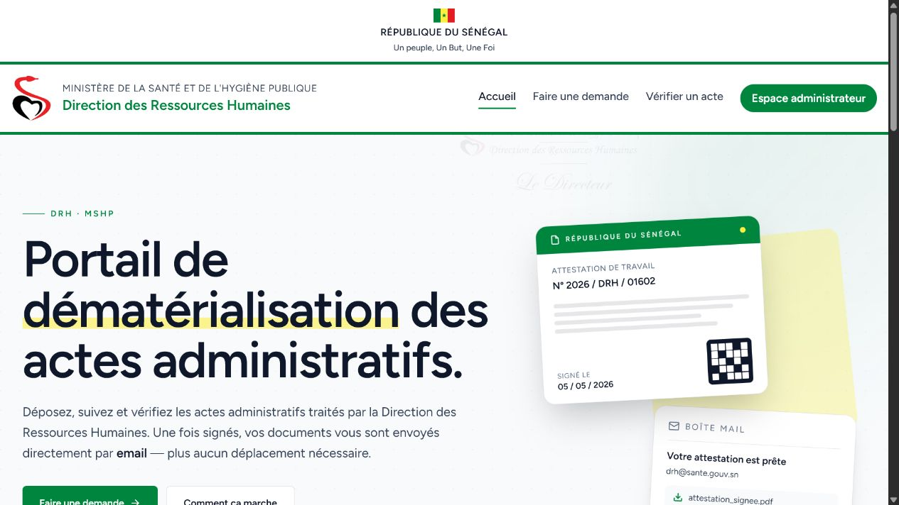

Deux plateformes, une même ambition
À la Direction des Ressources Humaines du Ministère de la Santé et de l’Hygiène Publique, j’ai contribué à remplacer des circuits administratifs manuels par des services numériques structurés. MIRSAS traite la mobilité des agents ; e‑DRHSanté dématérialise cinq procédures administratives. Conçues comme deux réalisations distinctes et complémentaires, elles améliorent l’accès au service, le suivi des dossiers et la traçabilité des traitements.
Ces solutions s’inscrivent dans un environnement national de gestion des ressources humaines couvrant environ 25 000 agents de santé. Ce chiffre décrit la portée du système RH sous-jacent et non le nombre d’utilisateurs actifs de chaque plateforme.
MIRSAS
Numériser la mobilité des agents
Les demandes de mutation reposaient sur un traitement manuel difficile à suivre. Développée principalement de septembre 2020 à décembre 2021 puis maintenue en exploitation, MIRSAS numérise le workflow national de mobilité : dépôt de la demande, instruction du dossier et validation.
Comme ingénieur développeur et chef de projet technique, j’ai pris part à la concertation avec les parties prenantes, à la rédaction du cahier des charges, à l’architecture, à la modélisation, au développement, aux tests, au déploiement, à la documentation et à la formation des utilisateurs. La plateforme rend la démarche plus accessible et son traitement plus traçable à l’échelle nationale.
e‑DRHSanté
Dématérialiser les procédures administratives
e‑DRHSanté étend la modernisation au-delà de la mobilité en proposant un point d’accès numérique à cinq procédures administratives de la DRH. La plateforme transforme les démarches concernées en workflows structurés, depuis la demande jusqu’à leur traitement, afin de renforcer l’accessibilité du service et le suivi des dossiers.
Ma contribution couvre le choix de l’architecture et des technologies, la modélisation des processus, le développement, les tests, le déploiement et la formation. Cette approche associe réalisation technique et accompagnement des utilisateurs pour inscrire durablement les nouveaux parcours dans les pratiques administratives.
Le lancement d’e‑DRHSanté
L’Agence de Presse Sénégalaise a couvert le lancement de la plateforme et sa contribution à la modernisation de la gestion des procédures administratives des ressources humaines en santé.
Reportage de l’APS TV — Voir sur YouTube ↗
Un portefeuille de services complémentaires
Demandes de bourse
En 2022, j’ai conçu et développé une solution dédiée à la dématérialisation des demandes de bourse. Réalisée avec PHP et Laravel, elle couvre l’architecture, la modélisation, le développement, les tests, le déploiement et la formation, et demeure en exploitation.
Diplômes d’État authentifiés par QR code
J’ai également conçu et déployé une solution Java/Spring de génération et d’authentification des diplômes d’État. Le QR code permet une vérification sécurisée et instantanée de l’authenticité des documents.
Suivi et archivage administratif
Le portefeuille comprend enfin un logiciel de suivi des sorties temporaires et définitives du personnel, développé entre juin 2018 et janvier 2019, ainsi qu’un système d’archivage électronique destiné à renforcer la conservation et la traçabilité des documents administratifs.
Une démarche de bout en bout
Ces réalisations illustrent une même méthode : écouter les équipes métiers, formaliser les besoins dans un cahier des charges, modéliser les processus et les données, choisir une architecture adaptée, puis conduire le développement jusqu’à la mise en production.
Les tests, la documentation, la formation et l’accompagnement des utilisateurs font partie intégrante du travail. L’objectif n’est pas seulement de livrer un logiciel, mais de rendre chaque nouveau service compréhensible, exploitable et durable dans son contexte institutionnel.
Aperçu des solutions
Les interfaces donnent à voir le portail e‑DRHSanté, le suivi des demandes de mobilité, la démarche de bourse et le contrôle d’authenticité des diplômes.
